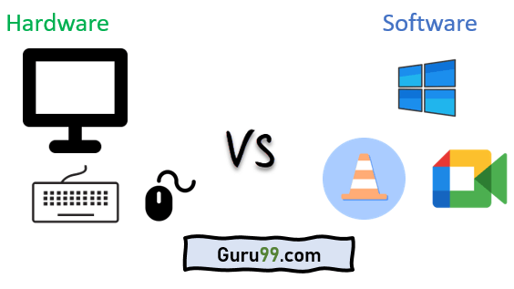

Sistemas de Informacion Gerencial
“Una de las verdaderas pruebas del liderazgo es la capacidad de reconocer un problema antes de que se convierta en una emergencia” ~ Arnold Glasow.
Concepto de los Sistemas de Información Gerencial y Su importancia.
Concepto
Un Sistema de Información Gerencial se define como un conjunto de Sistemas de Información relacionados y que van a interactuar entre sí para brindar información valiosa que van a cubrir necesidades de las operaciones y administración de la organización.
Importancia
En informática, los sistemas de información ayudan a administrar, recolectar, recuperar, procesar, almacenar y distribuir información relevante para los procesos fundamentales y las particularidades de cada organización.
La implementación de sistemas de información en una compañía, brindan la posibilidad de obtener grandes ventajas, incrementar la capacidad de organización de la empresa, y tornar de esta manera los procesos una verdad competitividad.
Para ello, es necesario un sistema eficaz que ofrezca múltiples posibilidades, permitiendo acceder a los datos relevantes de manera frecuente y oportuna.
Por eso, quienes deseen convertir su emprendimiento en una verdadera empresa competitiva insertada en el mercado actual, deberán analizar detalladamente la implementación necesaria de sistemas de información precisos.
Este video Produndiza mas en el tema
Un sistema de información debe cumplir con los siguientes componentes básicos interactuando entre sí:
Los sistemas de información son una combinación de tres partes principales: las personas, los procesos del negocio y los equipos de tecnologías de la información.
created with
Website Builder Software .